一、前期准备
- 阅读 README-bomblab.txt 文档
- 阅读bomblab.pdf
- 解压文件: linux-x86-64 binary bomb.tar
由于原文件名有空格，无法使用tar -xvf命令，需对其改名
先将文件名改为bomb64.tar，然后在终端输入一下命令：
解压完成后会在当前目录生成名为bomb的子目录tar -xvf bomb64.tar - 阅读bomb目录文件
在bomb目录下共有三个文件：
README
bomb.c bomb的部分代码
bomb bomb的可执行文件
打开README，发现其中的内容为：This is an x86-64 bomb for self-study students.
这是炸弹的学生信息
打开bomb.c，寻找main函数的关键信息
printf("Welcome to my fiendish little bomb. You have 6 phases with\n");
printf("which to blow yourself up. Have a nice day!\n");
input = read_line(); /* Get input */
phase_1(input); /* Run the phase */
phase_defused(); /* Drat! They figured it out!
* Let me know how they did it. */
printf("Phase 1 defused. How about the next one?\n");
通过代码，我们发现要拆解炸弹，就是给出每个阶段对应的一串输入。代码中不包含各阶段的处理函数，那么接下来就需要对bomb进行反汇编。
- 使用objdump对bomb反汇编
(1) 打印bomb的各函数和全局变量，并存储在bombTable.txt中objdump -t bomb>bombTable.txt
(2) 对bomb反汇编，生成汇编代码，并保存在bomb.asm
objdump -d bomb>bomb.asm前期准备完成，接下来开始分析汇编代码。
二、phase_1
汇编代码及分析
0000000000400ee0 :
400ee0: 48 83 ec 08 sub $0x8,%rsp # 分配栈帧空间
400ee4: be 00 24 40 00 mov $0x402400,%esi # 将0x402400保存在寄存器esi中
400ee9: e8 4a 04 00 00 callq 401338 # 调用函数
400eee: 85 c0 test %eax,%eax # 比较函数的返回值
400ef0: 74 05 je 400ef7 # 如果返回值为0，跳到指令400ef7
400ef2: e8 43 05 00 00 callq 40143a # 引爆炸弹
400ef7: 48 83 c4 08 add $0x8,%rsp # 回收栈帧空间
400efb: c3 retq # 函数返回 这一阶段的函数参数为一个字符串，存储在寄存器%edi中。
然后，将0x402400存入寄存器%esi中，
再调用 strings_not_equal 函数比较寄存器%edi和%esi中的两个字符串。
查看地址0x402400的内容
现在我们看看向寄存器%esi存入的是什么内容：
使用gdb运行bomb
gdb bomb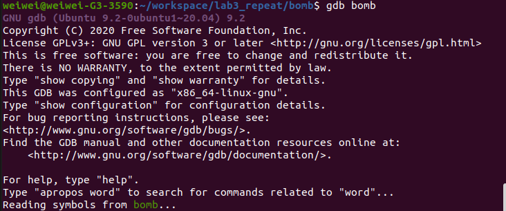
在函数phase_1 和 explode_bomb 处 设置断点
b phase_1
b explode_bomb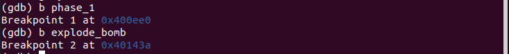
运行程序:
r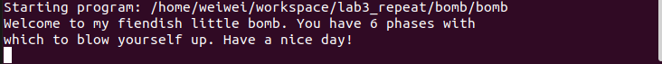
下面随便输入一串字符”aaa”，然后运行到断点
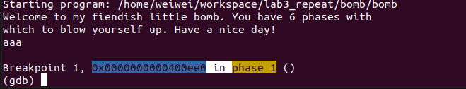
我们来看看内存0x402400的内容,因为这是一个字符串，我们使用x/s命令：
x/s 0x402400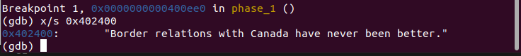
我们看到字符串为：
Border relations with Canada have never been better.
这就是阶段1的答案。
下面我们验证一下：
使用指令q退出gdb调试，然后重新运行gdb。
以防万一，我们先在explode_bomb设置断点，然后运行bomb。
输入字符串 Border relations with Canada have never been better. 第一阶段完成~
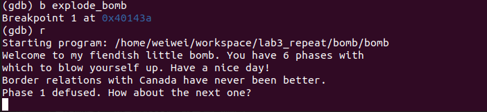
为了后续调试不需要手动输入之前的解码，我们把answer保存在answer.txt文件下，之后运行只需要输入r < answer.txt即可。
三、phase_2
分析代码
片段一：循环之前
首先看前五个指令：
400efc: 55 push %rbp # 将寄存器%rbp压栈
400efd: 53 push %rbx # 将寄存器%rbx压栈
400efe: 48 83 ec 28 sub $0x28,%rsp # 分配栈帧空间，大小为40字节
400f02: 48 89 e6 mov %rsp,%rsi # 将栈指针%rsp的值
400f05: e8 52 05 00 00 callq 40145c # 调用函数，读取六个数字 阅读代码可以发现，这次要输入的为6个数。我们继续往下分析
400f0a: 83 3c 24 01 cmpl $0x1,(%rsp) # 将Mem[%rsp]和1比较
400f0e: 74 20 je 400f30 # 如果这个数等于1，跳转到400f30
400f10: e8 25 05 00 00 callq 40143a # 引爆炸弹
400f15: eb 19 jmp 400f30 # 跳转到400f30 第一条指令将Mem[%rsp]的值与1进行比较。Mem[%rsp]存储的是什么呢？我们看最开始的5条指令：
400efc: 55 push %rbp # 将寄存器%rbp压栈
400efd: 53 push %rbx # 将寄存器%rbx压栈
400efe: 48 83 ec 28 sub $0x28,%rsp # 分配栈帧空间，大小为40字节
400f02: 48 89 e6 mov %rsp,%rsi # 将栈指针%rsp的值
400f05: e8 52 05 00 00 callq 40145c # 调用函数，读取六个数字 首先传入函数phase_2的只有1个参数——字符串，它存放在寄存器%rdi中（这是字符串第一个元素的地址）。
然后又将%rsp的值存储到%rsi中，然后调用函数read_six_numbers。
因此字符串%rdi作为read_six_numbers的第一个参数，%rsp作为该函数的第二个参数。
这里我猜想执行完函数后，Mem[%rsp]存储了我们输入的第一个数，
后面的数依次存放在Mem[%rsp + 0x4], Mem[%rsp + 0x8], Mem[%rsp + 0xc], Mem[%rsp + 0x10], Mem[%rsp + 0x14]。
我们用gdb来验证猜想：
首先在answer.txt中添加输入：“2 3 4 5 6 7”，然后调试程序。
注意：这次断点需要打在指定的指令上，如果只在explode_bomb函数打断点，仍然会执行callq指令，该指令会把调用函数后需要返回的地址（下一条执行指令的地址）压栈。这样使用x/d $rsp就不会得到想要的结果
设置断点
b explode_bomb
b *0x400f0a
r < answer.txt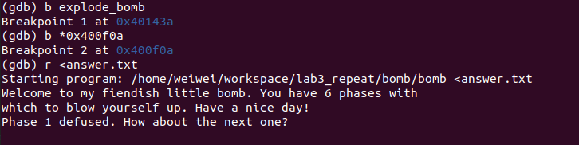
查看栈帧Mem[%rsp]中连续6个空间(4Bytes * 6)的内容
x/6dw $rsp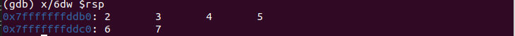
内容分别为2 3 4 5 6，与我们的输入顺序一致，猜想正确。
而根据指令，我们可以发现：第一个数必须为1。
我们继续往下看。
执行完判断后，指令跳转到400f30。我们来看看400f30这个片段代码：
# .400f30
400f30: 48 8d 5c 24 04 lea 0x4(%rsp),%rbx # 将%rsp+4存储到%rbx中
400f35: 48 8d 6c 24 18 lea 0x18(%rsp),%rbp # 将%rsp+24存储到%rbp中
400f3a: eb db jmp 400f17 # 跳转到400f17 栈帧中这个数组每个元素的大小为4 bytes。将%rsp+4存储到%rbx中，相当于将下一个元素的地址保存到%rbx中。%rbp存储数组最后一个元素的下一个地址。
之后指令跳转到400f17，我们来看看这段指令。
片段二：循环
先来看看机器指令：
# .400f17
400f17: 8b 43 fc mov -0x4(%rbx),%eax # 将Mem[%rbx-4]存储到%eax
400f1a: 01 c0 add %eax,%eax # %eax += %eax
400f1c: 39 03 cmp %eax,(%rbx) # 比较%eax和Mem[%rsp]
400f1e: 74 05 je 400f25 # 如果相等，跳过引爆炸弹
400f20: e8 15 05 00 00 callq 40143a # 引爆炸弹
400f25: 48 83 c3 04 add $0x4,%rbx # %rbx += 4
400f29: 48 39 eb cmp %rbp,%rbx # 比较%rbp 和 %rbx
400f2c: 75 e9 jne 400f17 # 如果不相等，跳转到400f17
400f2e: eb 0c jmp 400f3c # 跳转到400f3c 将其转换为C语言代码
void phase_2(int nums[6]) {
if(nums[0] != 1)
explode();
int *end = nums + 6;
int *p = nums + 1;
while (p != end) {
int temp = *(p - 1);
temp += temp;
if(*p != temp)
explode();
p++;
}
}可以看到，数组中的每个元素都应该是前一个元素的两倍。由于第一个元素为1，所以这六个元素确定了：
答案
1 2 4 8 16 32
第二阶段完成。
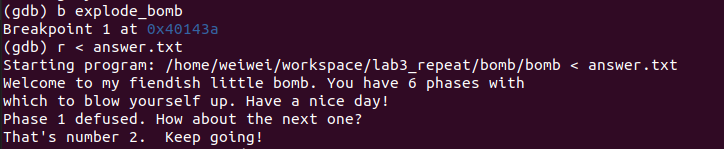
四、phase_3
首先我们来分析机器指令
分析指令
第一块：分配栈帧空间
400f43: 48 83 ec 18 sub $0x18,%rsp
400f47: 48 8d 4c 24 0c lea 0xc(%rsp),%rcx
400f4c: 48 8d 54 24 08 lea 0x8(%rsp),%rdx第二块：读入数据
400f51: be cf 25 40 00 mov $0x4025cf,%esi # 将0x4025cf存入寄存器%esi
400f56: b8 00 00 00 00 mov $0x0,%eax # 将0存入寄存器%eax
400f5b: e8 90 fc ff ff callq 400bf0 <__isoc99_sscanf@plt> # 调用函数<__isoc99_sscanf@plt>
400f60: 83 f8 01 cmp $0x1,%eax # 将函数的返回值和1比较
400f63: 7f 05 jg 400f6a <phase_3+0x27> # 如果大于1, 跳过explode_bomb
400f65: e8 d0 04 00 00 callq 40143a <explode_bomb> # 引爆炸弹我们来看看Mem[0x4025cf]中存储的是什么内容：
x/s 0x4025cf我们发现这是一个字符串”%d %d”。
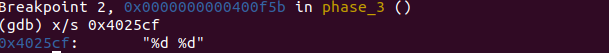
根据C语言scanf的知识，可以断定，这次我们输入的内容应该是两个整数。
我们继续向下看：
第三块：switch
先看switch前的部分
400f6a: 83 7c 24 08 07 cmpl $0x7,0x8(%rsp) # 将Mem[%rsp+0x8]与7比较
400f6f: 77 3c ja 400fad # 如果大于7（无符号型），跳到爆炸
400f71: 8b 44 24 08 mov 0x8(%rsp),%eax # 把Mem[%rsp+0x8]写入寄存器%eax
400f75: ff 24 c5 70 24 40 00 jmpq *0x402470(,%rax,8) # Jump Table 这里我们发现需要输入的第一个数要小于等于7，然后会根据我们输入的数进行switch跳转。
Mem[0x402470]存放了Jump Table，我们用 x/8xg 0x402470 来查看Jump Table的内容：
x/8xg 0x402470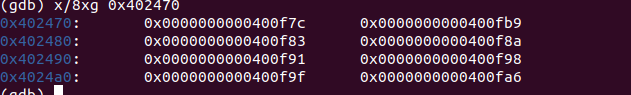
然后根据这个，我们可以得到如下的跳转关系：
0 -> 400f7c
1 -> 400fb9
2 -> 400f83
3 -> 400f8a
4 -> 400f91
5 -> 400f98
6 -> 400f9f
7 -> 400fa6
我们来看跳转后的指令：
# 0
400f7c: b8 cf 00 00 00 mov $0xcf,%eax
400f81: eb 3b jmp 400fbe
# 2
400f83: b8 c3 02 00 00 mov $0x2c3,%eax
400f88: eb 34 jmp 400fbe
# 3
400f8a: b8 00 01 00 00 mov $0x100,%eax
400f8f: eb 2d jmp 400fbe
# 4
400f91: b8 85 01 00 00 mov $0x185,%eax
400f96: eb 26 jmp 400fbe
# 5
400f98: b8 ce 00 00 00 mov $0xce,%eax
400f9d: eb 1f jmp 400fbe
# 6
400f9f: b8 aa 02 00 00 mov $0x2aa,%eax
400fa4: eb 18 jmp 400fbe
# 7
400fa6: b8 47 01 00 00 mov $0x147,%eax
400fab: eb 11 jmp 400fbe
# .400fad
400fad: e8 88 04 00 00 callq 40143a
400fb2: b8 00 00 00 00 mov $0x0,%eax
# 1
400fb7: eb 05 jmp 400fbe
400fb9: b8 37 01 00 00 mov $0x137,%eax
# .400fbe
400fbe: 3b 44 24 0c cmp 0xc(%rsp),%eax
400fc2: 74 05 je 400fc9
400fc4: e8 71 04 00 00 callq 40143a
400fc9: 48 83 c4 18 add $0x18,%rsp
400fcd: c3 retq 每条case分支都是将一个数写入寄存器%rax，然后把我们输入的第二个数和它比较是否相等。如果相等，这个阶段解决。
所以本阶段的答案:(任选一个)
0 207
1 311
2 707
3 256
4 389
5 206
6 682
7 327
五、phase_4
我们来看这一阶段指令
分析指令
片段一：调用函数前
40100c: 48 83 ec 18 sub $0x18,%rsp
401010: 48 8d 4c 24 0c lea 0xc(%rsp),%rcx
401015: 48 8d 54 24 08 lea 0x8(%rsp),%rdx
40101a: be cf 25 40 00 mov $0x4025cf,%esi
40101f: b8 00 00 00 00 mov $0x0,%eax
401024: e8 c7 fb ff ff callq 400bf0 <__isoc99_sscanf@plt>
401029: 83 f8 02 cmp $0x2,%eax
40102c: 75 07 jne 401035 # 如果不相等，引爆炸弹 和前一阶段一样，本阶段也是输入两个数。调用函数 isoc99_sscanf@plt 将返回我们输入数的个数。如果不为2，引爆炸弹。
继续往下看：
40102e: 83 7c 24 08 0e cmpl $0xe,0x8(%rsp) # 比较Mem[%rsp + 8]和16
401033: 76 05 jbe 40103a # 如果小于等于16，跳过炸弹
401035: e8 00 04 00 00 callq 40143a
40103a: ba 0e 00 00 00 mov $0xe,%edx # %edx = 16
40103f: be 00 00 00 00 mov $0x0,%esi # %esi = 0
401044: 8b 7c 24 08 mov 0x8(%rsp),%edi # %edi = Mem[%rsp + 8]
401048: e8 81 ff ff ff callq 400fce # 调用函数
40104d: 85 c0 test %eax,%eax # 判断返回值
40104f: 75 07 jne 401058 # 如果返回值不为0，引爆 和上一阶段一样，Mem[%rsp + 8]存的时我们输入的第一个数。输入的数小于等于16时，它会调用函数 func4 。其中函数的调用参数如下:
func4(first_num, 0, 15);并且函数的返回值必须是0。
那我们来看看func4函数
片段二：函数 func4
机器指令如下：
0000000000400fce :
400fce: 48 83 ec 08 sub $0x8,%rsp # allocate stack space
400fd2: 89 d0 mov %edx,%eax # move %edx -> %eax
400fd4: 29 f0 sub %esi,%eax # %eax -= %esi
400fd6: 89 c1 mov %eax,%ecx #
400fd8: c1 e9 1f shr $0x1f,%ecx
400fdb: 01 c8 add %ecx,%eax
400fdd: d1 f8 sar %eax
400fdf: 8d 0c 30 lea (%rax,%rsi,1),%ecx
400fe2: 39 f9 cmp %edi,%ecx
400fe4: 7e 0c jle 400ff2
400fe6: 8d 51 ff lea -0x1(%rcx),%edx
400fe9: e8 e0 ff ff ff callq 400fce
400fee: 01 c0 add %eax,%eax
400ff0: eb 15 jmp 401007
# .Block1
400ff2: b8 00 00 00 00 mov $0x0,%eax
400ff7: 39 f9 cmp %edi,%ecx
400ff9: 7d 0c jge 401007
400ffb: 8d 71 01 lea 0x1(%rcx),%esi
400ffe: e8 cb ff ff ff callq 400fce
401003: 8d 44 00 01 lea 0x1(%rax,%rax,1),%eax
401007: 48 83 c4 08 add $0x8,%rsp
40100b: c3 func4 转换成C语言:
int fun4(int x, int y, int z) {
int val = z - y;
int temp = (val >> 31); //if negative
val = (val + temp) >> 1;
temp = val + y;
if(temp - x <= 0) {
val = 0;
if(temp - x >= 0) { // x == temp
return 0;
}
}
z -= 1;
val += fun4(x, y, z);
return val;
}根据C语言逻辑，要想
func4(first_num, 0, 15) = 0;第一个参数必须为7。因此我们输入的第一个数为7.
片段三：第二个数
401051: 83 7c 24 0c 00 cmpl $0x0,0xc(%rsp)
401056: 74 05 je 40105d <phase_4+0x51>
401058: e8 dd 03 00 00 callq 40143a <explode_bomb>
40105d: 48 83 c4 18 add $0x18,%rsp
401061: c3 retq Mem[%rsp+12]存储的是我们输入的第二个数。只有这个数为0时，才能逃过炸弹。因此答案很明显了。
本阶段答案
7 0
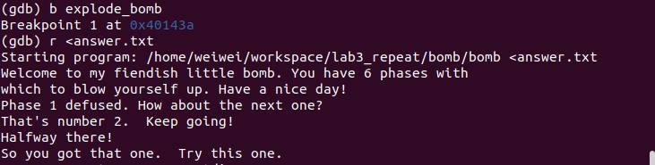
六、phase_5
分析指令
片段一：读取输入
401062: 53 push %rbx
401063: 48 83 ec 20 sub $0x20,%rsp
401067: 48 89 fb mov %rdi,%rbx # 将输入的字符串(首地址)保存在%rbx
40106a: 64 48 8b 04 25 28 00 mov %fs:0x28,%rax
401071: 00 00
401073: 48 89 44 24 18 mov %rax,0x18(%rsp)
401078: 31 c0 xor %eax,%eax
40107a: e8 9c 02 00 00 callq 40131b
40107f: 83 f8 06 cmp $0x6,%eax
401082: 74 4e je 4010d2
401084: e8 b1 03 00 00 callq 40143a 可以看到这部分先计算输入字符串的长度，如果长度不为6，就引爆炸弹。
那么是哪六个字符呢？我们继续看。
片段二：循环
刚才跳转到4010d2，我们来看这段指令：
4010d2: b8 00 00 00 00 mov $0x0,%eax # %eax = 0
4010d7: eb b2 jmp 40108b 继续跳转40108b：
40108b: 0f b6 0c 03 movzbl (%rbx,%rax,1),%ecx # %ecx = Mem[%rbx + %rax]
40108f: 88 0c 24 mov %cl,(%rsp) # Mem[%rsp] = %cl(寄存器%ecx低位的1字节)
401092: 48 8b 14 24 mov (%rsp),%rdx # %rdx = %cl
401096: 83 e2 0f and $0xf,%edx # %rdx &= 0xf 只保留低位四字节
401099: 0f b6 92 b0 24 40 00 movzbl 0x4024b0(%rdx),%edx # %edx = Mem[0x4024b0 + %rdx]
4010a0: 88 54 04 10 mov %dl,0x10(%rsp,%rax,1) # Mem[%rsp + 16 + %rax] = %dl
4010a4: 48 83 c0 01 add $0x1,%rax # %rax += 1
4010a8: 48 83 f8 06 cmp $0x6,%rax # 比较%rax 和 6
4010ac: 75 dd jne 40108b # 如果不等于6，继续循环 可以看出来，这是一个循环。%eax在循环中会自增，而且我们根据%eax的值来获取字符串中的字符，所以%eax是保存当前字符的下标。
我们用x/s 0x4024b0 来看看这里存的是什么：
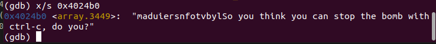
这段字符串为：”maduiersnfotvbylSo you think you can stop the bomb with ctrl-c, do you?”
对%edx使用了位屏蔽，只保留第四位的值，所以%edx的范围是[0,15]，
所以上面的字符串有效的部分为“aduiersnfotvbyl”。这个字符串相当与字典，它会根据%edx的大小从其中选取对应下标的字符存储在Mem[%rsp + 16 + %rax]中。
我们把循环改成C语言：
int index = 0;
char dictionary[17] = "maduiersnfotvbyl";
if(s.length != 6) {
explode();
}
unsigned char c;
char res_str[7];
while (index != 6){
c = s[index];
res_str[index] = dictionary[c & 0xf];
}继续往下看：
4010ae: c6 44 24 16 00 movb $0x0,0x16(%rsp)
4010b3: be 5e 24 40 00 mov $0x40245e,%esi
4010b8: 48 8d 7c 24 10 lea 0x10(%rsp),%rdi
4010bd: e8 76 02 00 00 callq 401338
4010c2: 85 c0 test %eax,%eax
4010c4: 74 13 je 4010d9
4010c6: e8 6f 03 00 00 callq 40143a
4010cb: 0f 1f 44 00 00 nopl 0x0(%rax,%rax,1)
4010d0: eb 07 jmp 4010d9 第一条指令给新生成字符数组的末尾加上了’\0’，使它成为了字符串。
然后比较0x40245e和当前字符串。
通过指令 x/s 0x40245e 我们看到字符串为”flyers”。
要构造这个字符串，我们需要的字典下标为:
9 15 14 5 6 7
对应的二进制为:
1001 1111 1110 0101 0110 0111
我们输入的字符串ASCII码二进制形式的低位需要是这些数。
因此我们可以得到答案：
其中一个答案
IONEFG
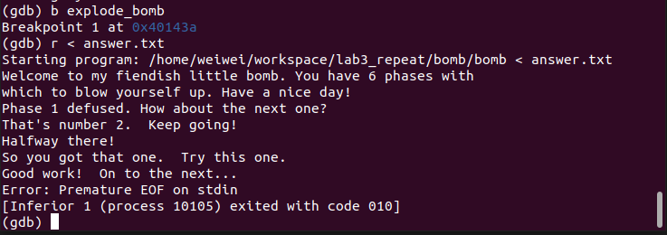
七、phase_6
分析指令
片段一：读取6个数
我们来看指令：
4010f4: 41 56 push %r14
4010f6: 41 55 push %r13
4010f8: 41 54 push %r12
4010fa: 55 push %rbp
4010fb: 53 push %rbx
4010fc: 48 83 ec 50 sub $0x50,%rsp
401100: 49 89 e5 mov %rsp,%r13
401103: 48 89 e6 mov %rsp,%rsi
401106: e8 51 03 00 00 callq 40145c # 调用函数 从这我们可以看出，我们输入的应该是6个数。将%rsp的内容写入%rsi，作为函数的调用参数。所以我们输入的6个数将会存放在栈帧中。
为了验证这个，我们使用GDB调试。输入6个数：11 22 33 44 55 66
使用命令：
x/6dw $rsp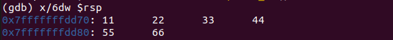
可以看到，Mem[%rsp]及之后连续的地址内存放了我们输入的六个数，猜想正确。
片段二：循环判断
我们来看指令：
40110b: 49 89 e6 mov %rsp,%r14 # 将数组的首地址存储在%r14
40110e: 41 bc 00 00 00 00 mov $0x0,%r12d # %r12d = 0
# .401114
401114: 4c 89 ed mov %r13,%rbp # %rbp = %r13 = %rsp
401117: 41 8b 45 00 mov 0x0(%r13),%eax # %eax = Mem[%r13 + 0]
40111b: 83 e8 01 sub $0x1,%eax # %eax -= 1;
40111e: 83 f8 05 cmp $0x5,%eax # 比较5和%eax
401121: 76 05 jbe 401128 # 如果小于等于5，跳过引爆炸弹
401123: e8 12 03 00 00 callq 40143a
401128: 41 83 c4 01 add $0x1,%r12d # %r12d += 1
40112c: 41 83 fc 06 cmp $0x6,%r12d # %12d :6
401130: 74 21 je 401153 # 如果等于6，跳转
401132: 44 89 e3 mov %r12d,%ebx # %ebx = %r12d
401135: 48 63 c3 movslq %ebx,%rax # %eax = %ebx
401138: 8b 04 84 mov (%rsp,%rax,4),%eax # %eax = Mem[%rsp + 4 * %rax]
40113b: 39 45 00 cmp %eax,0x0(%rbp) # %eax:Mem[%rbp]
40113e: 75 05 jne 401145 # 如果不相等，跳过炸弹
401140: e8 f5 02 00 00 callq 40143a
401145: 83 c3 01 add $0x1,%ebx # %ebx += 1
401148: 83 fb 05 cmp $0x5,%ebx # %rbx : 5
40114b: 7e e8 jle 401135 # 如果小于等于5
40114d: 49 83 c5 04 add $0x4,%r13 # %r13 += 4
401151: eb c1 jmp 401114 将其转换成C语言(伪代码，有些缺失)：
int nums[6];
int rsi, edx;
read_six_numbers(nums);
//All the number ranges in [1, 6] (Incomplete code)
if(nums[0] - 1 >= 5) {
explode();
}
int index = 0; //%r12
while(index != 6) {
index++;
if(index == 6)
break;
int temp = index; //%ebx
Loop1:
int val = nums[index]; //eax
if(val == 0)
explode();
temp++;
if(temp <= 5)
goto Loop1;
//
}可以发现，所有的数都要在[1,6]范围内，并且互不相同。
片段三：循环操作
# .501153
401153: 48 8d 74 24 18 lea 0x18(%rsp),%rsi # %rsi = nums[6] addr, end of the array
401158: 4c 89 f0 mov %r14,%rax # mov the 1st num addr in rax
40115b: b9 07 00 00 00 mov $0x7,%ecx # ecx = 7
# .401160
401160: 89 ca mov %ecx,%edx # edx = ecx
401162: 2b 10 sub (%rax),%edx # edx -= (%rax)
401164: 89 10 mov %edx,(%rax) # (%rax) = edx
401166: 48 83 c0 04 add $0x4,%rax # %rax += 4 -> next num
40116a: 48 39 f0 cmp %rsi,%rax
40116d: 75 f1 jne 401160
40116f: be 00 00 00 00 mov $0x0,%esi
401174: eb 21 jmp 401197 转换成C语言：
for(int i = 0; i < 6; ++i) {
nums[i] = 7 - nums[i];
}
rsi = 0;
goto L401197;可以看出，之一阶段把每个数变成 7-原数
片段四：发现链表
接着，指令跳转到401197
# .401197
401197: 8b 0c 34 mov (%rsp,%rsi,1),%ecx # %ecx = num[?]
40119a: 83 f9 01 cmp $0x1,%ecx
40119d: 7e e4 jle 401183 <phase_6+0x8f> # $ecx <= 1, jump
40119f: b8 01 00 00 00 mov $0x1,%eax
4011a4: ba d0 32 60 00 mov $0x6032d0,%edx
4011a9: eb cb jmp 401176 <phase_6+0x82>我们来看看0x6032d0存储的内容：
我们使用指令：(一开始可以先用x/d 0x6032d0，发现它是node，然后我们多取几位地址)
x/12xg 0x6032d0
得到如下结果：0x6032d0 <node1>: 0x000000010000014c 0x00000000006032e0
0x6032e0 <node2>: 0x00000002000000a8 0x00000000006032f0
0x6032f0 <node3>: 0x000000030000039c 0x0000000000603300
0x603300 <node4>: 0x00000004000002b3 0x0000000000603310
0x603310 <node5>: 0x00000005000001dd 0x0000000000603320
0x603320 <node6>: 0x00000006000001bb 0x0000000000000000我们发现这是6个结点构成的空间，他们组成了一个链表:
struct node {
long x;
node* next;
}链表的前半部分存储的是数据，后半部分存储的是下一个结点的地址。
继续往下看：
# .401176
401176: 48 8b 52 08 mov 0x8(%rdx),%rdx
40117a: 83 c0 01 add $0x1,%eax
40117d: 39 c8 cmp %ecx,%eax
40117f: 75 f5 jne 401176
401181: eb 05 jmp 401188
# .401183
401183: ba d0 32 60 00 mov $0x6032d0,%edx
# .401188
401188: 48 89 54 74 20 mov %rdx,0x20(%rsp,%rsi,2)
40118d: 48 83 c6 04 add $0x4,%rsi
401191: 48 83 fe 18 cmp $0x18,%rsi
401195: 74 14 je 4011ab 将其转换成C语言(goto形式):
L401176:
rdx = Mem[rdx + 8];
eax += 1;
if(eax != ecx) {
goto L401176;
}
goto L401188;
L401183:
edx = 0x6032d0;
L401188:
Mem[rsp + 2 * rsi + 0x20] = rdx; //Save Node addr in the end of array
rsi += 4;
if(rsi == 20) {
goto L4011ab;
}
L401197:
ecx = nums[rsi / 4];
if(ecx <= 1) { // 7-nums[i] <= 1
goto L401183;
}
eax = 1;
edx = 0x6032d0;
goto L401176;这段代码的意思如下：
将链表的每个结点从1~6编号，变化后nums[]数组中的值与结点形成映射关系。
将nums[]数组对应的结点地址依次存放到栈帧空间。
片段五：构成新链表
# .4011ab
4011ab: 48 8b 5c 24 20 mov 0x20(%rsp),%rbx
4011b0: 48 8d 44 24 28 lea 0x28(%rsp),%rax
4011b5: 48 8d 74 24 50 lea 0x50(%rsp),%rsi
4011ba: 48 89 d9 mov %rbx,%rcx
# .4011bd
4011bd: 48 8b 10 mov (%rax),%rdx
4011c0: 48 89 51 08 mov %rdx,0x8(%rcx)
4011c4: 48 83 c0 08 add $0x8,%rax
4011c8: 48 39 f0 cmp %rsi,%rax
4011cb: 74 05 je 4011d2
4011cd: 48 89 d1 mov %rdx,%rcx
4011d0: eb eb jmp 4011bd
# .4011d2 4011e3: 8b 00 mov (%rax),%eax # long->int
4011e5: 39 03 cmp %eax,(%rbx)
4011d2: 48 c7 42 08 00 00 00 movq $0x0,0x8(%rdx) 将其转换成C语言：
L4011ab:
rbx = Mem[rsp + 0x20]; // the first node
rax = rsp + 0x28; // the second node addr
rsi = rsp + 0x50; // end of the array
rcx = rbx;
//Change this node next pointer, make them a new linklist
L4011bd:
rdx = Mem[rax]; // the second node
Mem[rcx + 0x8] = rdx; //the node next pointer
rax += 8; //the next node in array
if(rax == rsi) {
goto L4011d2;
}
goto L4011bd;
//set the endNode->next to NULL
L4011d2:
Mem[rdx + 0x8] = 0;这段代码将结点按新的顺序重新连接成新的链表。
片段六：比较链表中结点的数据域
4011da: bd 05 00 00 00 mov $0x5,%ebp
# .4011df
4011df: 48 8b 43 08 mov 0x8(%rbx),%rax
4011e3: 8b 00 mov (%rax),%eax # long->int
4011e5: 39 03 cmp %eax,(%rbx)
4011e7: 7d 05 jge 4011ee
4011e9: e8 4c 02 00 00 callq 40143a
4011ee: 48 8b 5b 08 mov 0x8(%rbx),%rbx
4011f2: 83 ed 01 sub $0x1,%ebp
4011f5: 75 e8 jne 4011df # ebp != 0 转换成C语言
//The new linklist should in descending order
L4011df:
rax = Mem[rbx + 8]; // now node->data
eax = Mem[rax]; //next node->data
if(rbx < eax) { //unsigned
explode();
}
rbx = Mem[rbx + 8];
ebp -= 1;
if(ebp != 0) {
goto L4011df;
}
OK;从这段代码可以看出：它比较链表中的每个值，链表为降序才能通过，否则引爆。
注意这里
4011e3: 8b 00 mov (%rax),%eax # long->int
4011e5: 39 03 cmp %eax,(%rbx)它将数据转换成32位整形比较！
这样这个阶段就可以解决了！
解决答案
1.首先我们输入的这六个数在[1,6]范围内。
2.这六个数在程序中转换成了 7 - nums[i]。
3.变换后的六个数，所对应的结点的值应该按递减的顺序。
各个结点的值：（已转换成int）
0x6032d0 <node1>: 0x0000014c 0x00000000006032e0
0x6032e0 <node2>: 0x000000a8 0x00000000006032f0
0x6032f0 <node3>: 0x0000039c 0x0000000000603300
0x603300 <node4>: 0x000002b3 0x0000000000603310
0x603310 <node5>: 0x000001dd 0x0000000000603320
0x603320 <node6>: 0x000001bb 0x0000000000000000将结点从大到小排序：3 4 5 6 1 2
那么7-nums[i]依次为：3 4 5 6 1 2
则nums[i]依次为：4 3 2 1 6 5
所以最终答案为：4 3 2 1 6 5
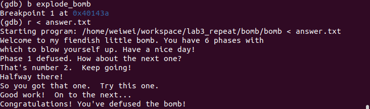
八、彩蛋题
进入彩蛋
汇编代码中 phase_6 后的 fun7 似乎没有用到，再看看汇编代码，它被 secret_phase 这个函数调用。
我们来看看哪里调用了 secret_phase 。
在 phase_defused 这部分中发现了调用。
00000000004015c4 :
4015c4: 48 83 ec 78 sub $0x78,%rsp
4015c8: 64 48 8b 04 25 28 00 mov %fs:0x28,%rax
4015cf: 00 00
4015d1: 48 89 44 24 68 mov %rax,0x68(%rsp)
4015d6: 31 c0 xor %eax,%eax
4015d8: 83 3d 81 21 20 00 06 cmpl $0x6,0x202181(%rip) # 603760
4015df: 75 5e jne 40163f 只有在0x202181(%rip)等于6的时候，才不会跳转。也就是说，只有当读取了6个字符串时，才会触发这个阶段。
继续往下看：
4015e1: 4c 8d 44 24 10 lea 0x10(%rsp),%r8
4015e6: 48 8d 4c 24 0c lea 0xc(%rsp),%rcx
4015eb: 48 8d 54 24 08 lea 0x8(%rsp),%rdx
4015f0: be 19 26 40 00 mov $0x402619,%esi
4015f5: bf 70 38 60 00 mov $0x603870,%edi
4015fa: e8 f1 f5 ff ff callq 400bf0 <__isoc99_sscanf@plt>我们在phase_6设置断点，查看内存地址0x402619，为：
“%d %d %s”
说明要读取的是两个数和一个字符串
我们继续查看0x603870，得到”7 0”。这正好是我们在第四阶段输入的答案。而且这一阶段的输入正好对应了前面的”%d %d”。
因此可以猜测，彩蛋题的答案应追加在第四阶段的答案上。
4015ff: 83 f8 03 cmp $0x3,%eax
401602: 75 31 jne 401635
401604: be 22 26 40 00 mov $0x402622,%esi
401609: 48 8d 7c 24 10 lea 0x10(%rsp),%rdi
40160e: e8 25 fd ff ff callq 401338
401613: 85 c0 test %eax,%eax
401615: 75 1e jne 401635
401617: bf f8 24 40 00 mov $0x4024f8,%edi
40161c: e8 ef f4 ff ff callq 400b10
401621: bf 20 25 40 00 mov $0x402520,%edi
401626: e8 e5 f4 ff ff callq 400b10
40162b: b8 00 00 00 00 mov $0x0,%eax
401630: e8 0d fc ff ff callq 401242 首先判断我们输入的是不是对应3个内容。然后将0x402622移入%esi，并与我们输入的字符串进行比较。
通过命令
x/s 0x402622我们可以看到内容为：
“DrEvil”
所以我们应该在7 0后面追加 DrEvil。
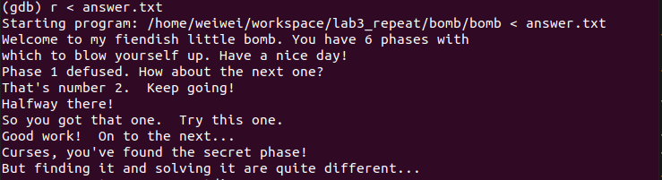
分析secret_phase
0000000000401242 :
401242: 53 push %rbx
401243: e8 56 02 00 00 callq 40149e
401248: ba 0a 00 00 00 mov $0xa,%edx
40124d: be 00 00 00 00 mov $0x0,%esi
401252: 48 89 c7 mov %rax,%rdi
401255: e8 76 f9 ff ff callq 400bd0
40125a: 48 89 c3 mov %rax,%rbx
40125d: 8d 40 ff lea -0x1(%rax),%eax
401260: 3d e8 03 00 00 cmp $0x3e8,%eax
401265: 76 05 jbe 40126c
401267: e8 ce 01 00 00 callq 40143a
40126c: 89 de mov %ebx,%esi
40126e: bf f0 30 60 00 mov $0x6030f0,%edi
401273: e8 8c ff ff ff callq 401204
401278: 83 f8 02 cmp $0x2,%eax
40127b: 74 05 je 401282
40127d: e8 b8 01 00 00 callq 40143a
401282: bf 38 24 40 00 mov $0x402438,%edi
401287: e8 84 f8 ff ff callq 400b10
40128c: e8 33 03 00 00 callq 4015c4 首先调用 read_line 读取一行输入，然后用所得的字符串调用 strtol@plt ，得到字符串对应的长整型。将长整型结果复制到%rbx中，令%eax = %rax-1。如果%eax <= 0x3e8（1000）,跳过炸弹。所以字符串转换后的数应该小于1001.
strtol(str, 0, 10);跳过炸弹后，调用函数fun7(0x6030f0, %esi),%esi存储的是字符串对应的整形。
fun7 返回值需要为2，否则引爆炸弹
那我们来看fun7
分析fun7
我们先来看看之前出现的0x6030f0内存空间
x/x 0x6030f0
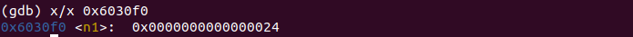
可以发现里边有一个整数，但这个是一个结构体，显示的内容还不完整，我们继续查看。
x/100x 0x6030f0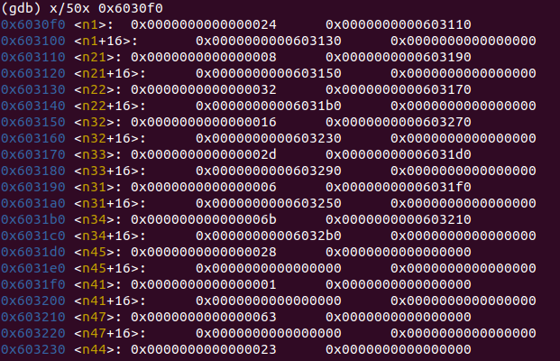
我们发现这个结构体的第一块区域存了数据，后面两块存储的是地址，最后一块都为0。这和我们学过的二叉树很像！那猜想第一段地址为左孩子，第二段地址为右孩子，那么我们可以把这棵树构建出来。
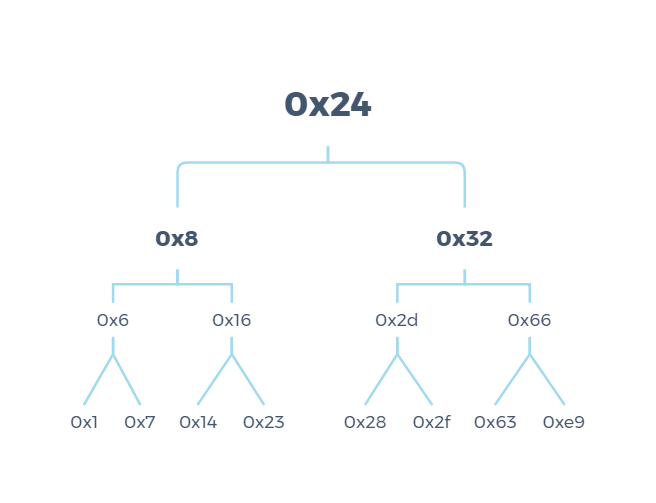
0000000000401204 :
401204: 48 83 ec 08 sub $0x8,%rsp
401208: 48 85 ff test %rdi,%rdi
40120b: 74 2b je 401238
40120d: 8b 17 mov (%rdi),%edx
40120f: 39 f2 cmp %esi,%edx
401211: 7e 0d jle 401220
401213: 48 8b 7f 08 mov 0x8(%rdi),%rdi
401217: e8 e8 ff ff ff callq 401204
40121c: 01 c0 add %eax,%eax
40121e: eb 1d jmp 40123d
401220: b8 00 00 00 00 mov $0x0,%eax
401225: 39 f2 cmp %esi,%edx
401227: 74 14 je 40123d
401229: 48 8b 7f 10 mov 0x10(%rdi),%rdi
40122d: e8 d2 ff ff ff callq 401204
401232: 8d 44 00 01 lea 0x1(%rax,%rax,1),%eax
401236: eb 05 jmp 40123d
401238: b8 ff ff ff ff mov $0xffffffff,%eax
40123d: 48 83 c4 08 add $0x8,%rsp
401241: c3 retq 改写成C语言:
int fun7(TNode* root, int x) {
int val; //edx
int ret_val;
if(root == NULL) {
return 0xffffffff;
}
val = root->data;
if(val <= x) {
goto L401220;
}
ret_val = fun7(TNode->left, x);
return 2 * ret_val;
L401220:
ret_val = 0;
if(x == val) {
return 0;
}
ret_val = fun7(TNode->right, x);
ret_val = ret_val + ret_val + 1;
return ret_val;
}使用非goto:
int fun7(Node* root, int x) {
if(root == NULL)
return 0xffffffff;
if(root->data == x) {
return 0;
}
if(root->data < x) {
return 2 * fun7(root->right, x) + 1;
}
return 2 * fun7(TNode->left, x);
}可以看出，如果当前结点和传入的值相等，返回0；
如果大于传入的结点，访问左子树；
小于传入的值，访问右子树。
要使最终的返回值为2，应该这样走：root -> left -> right
此时的结点值为0x16(22)
答案
22
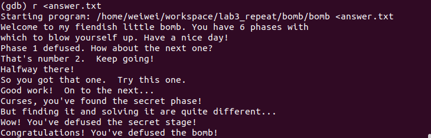
实验小结
通过Bomb Lab实验，我学会了使用gdb调试工具，而且对机器指令有了更深的理解。通过GDB调试工具的使用，我也进一步理解了栈帧空间的框架，和原理。对函数调用，参数传递有了进一步的认识！
Total Time: 14h